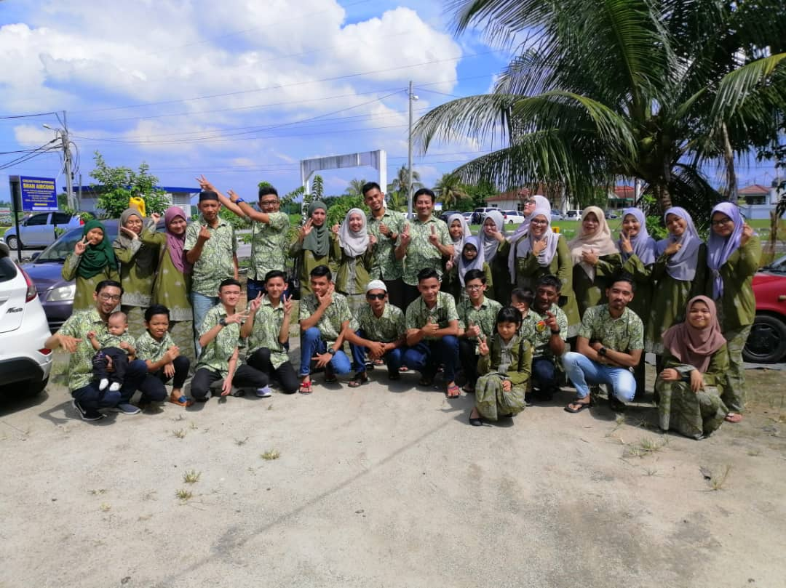
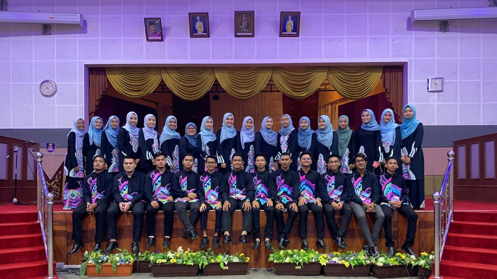

MY BIG FAMILY
This my father big family which he has 7 sibligs. This picture has been captured on the day of my cousin wedding. We has a familly cloth which is has been sponsored by my father`s brother.
MY FAMILY

This is my family so i will start introduce from left which is me afiq ikwan as a brother. Next, My father Noorafian is a person that work hard to make his family happy. He was born at Parit Buntar, Perak. Third, is my younger sister Intan Syazana. She was born at Hospital Taiping. Next, my youngest sister which is Intan Syamimi. She was born at hospital taiping On 2008. Lastly, is my mother Sarimah. She is a lovely mother that take a good care of me. She is housewife and was born at Penang.
OFFICE MANAGEMENT STUDENT ASSOCIATION FAMILY
At university (UiTM Dungun) , Office Management Students Association (OMSA) Club is my family. We had so many Memories through our event and meeting. From zero i was been teached how to be a good leader and learn all procedure before the event. In OMSA all members will be train to have a leadership skill. On 2018 I was been hired as a president, from this i was gain a lot of experience and this is the beginning of our ups and downs, successes and failure.